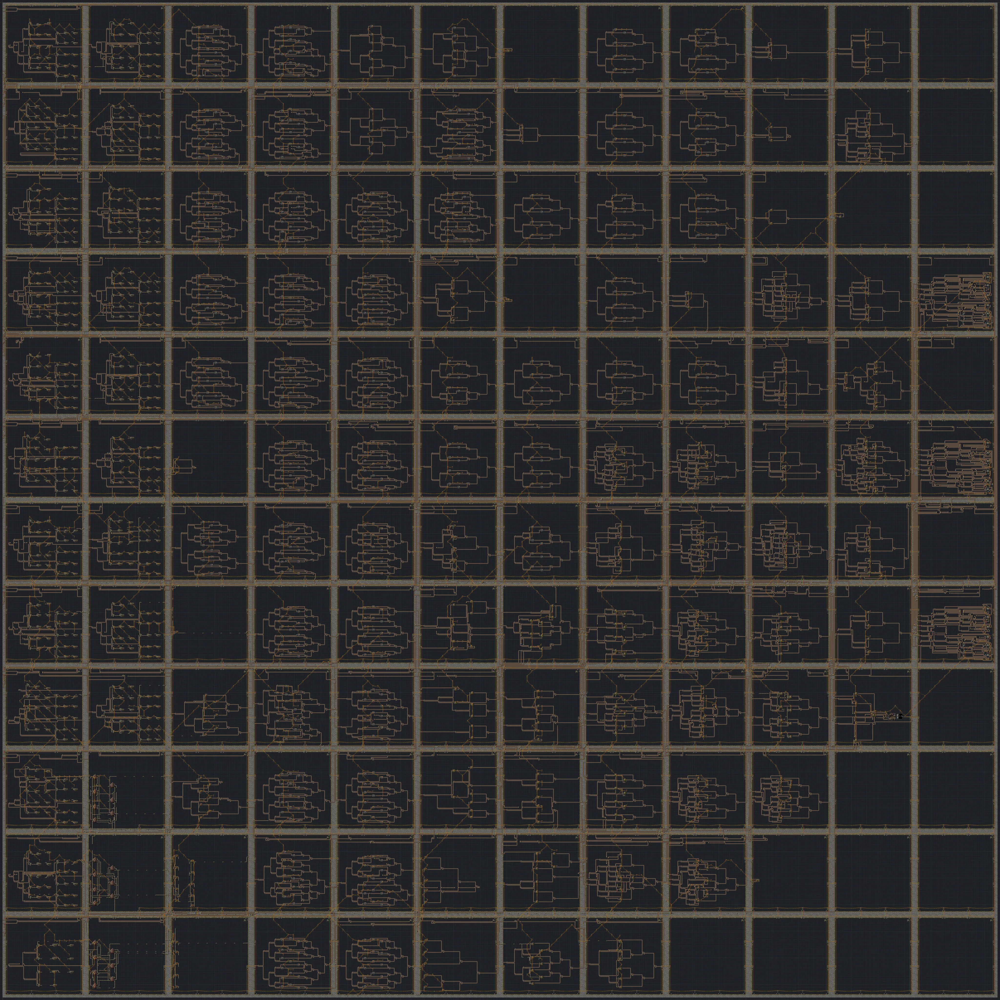
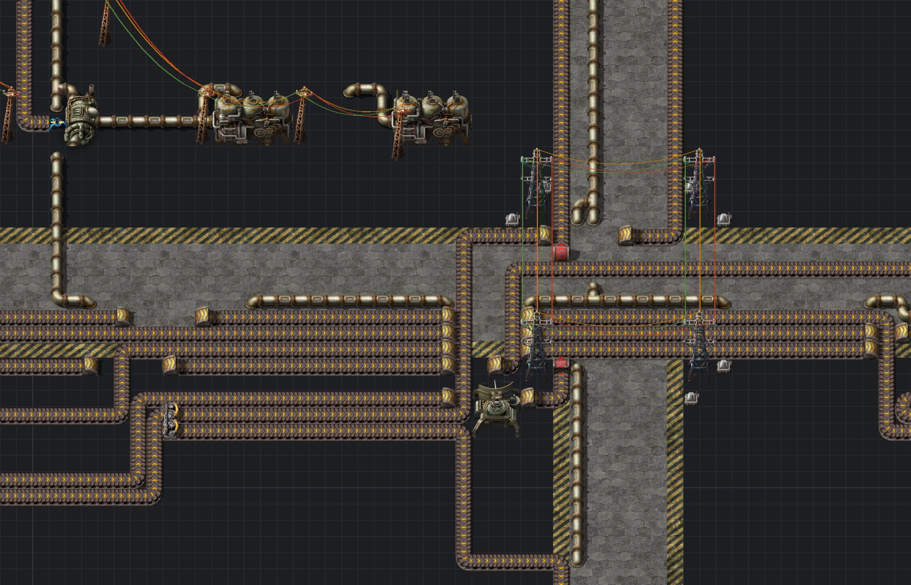
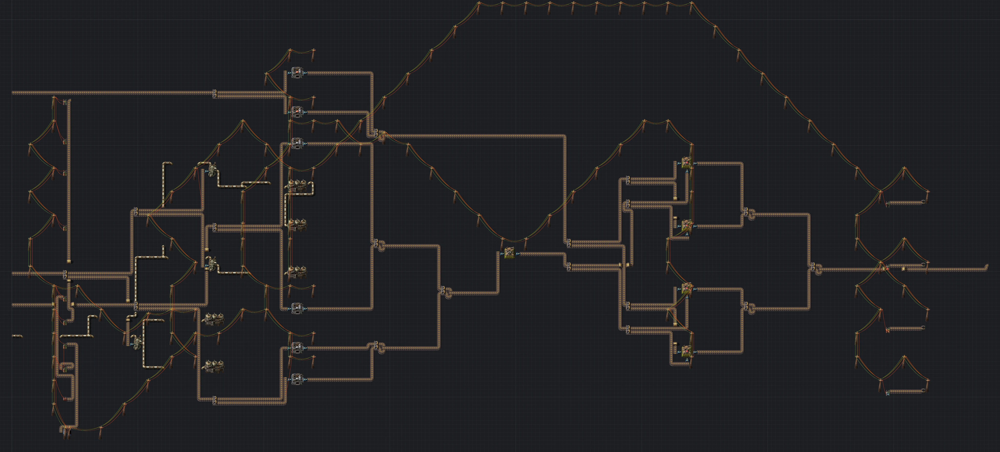
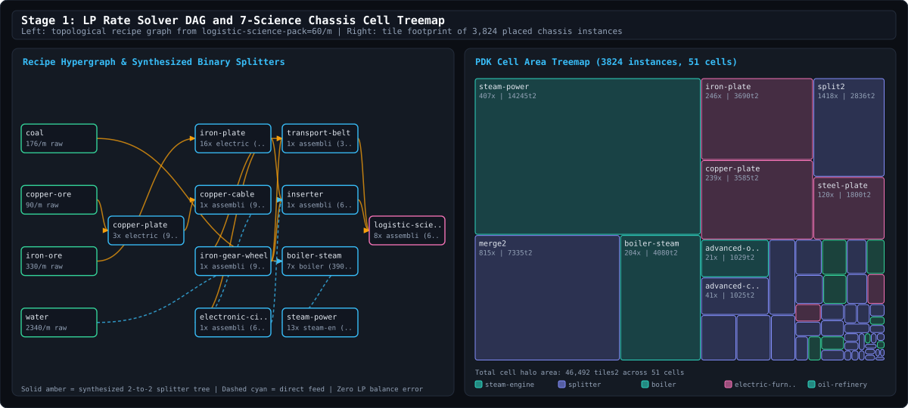
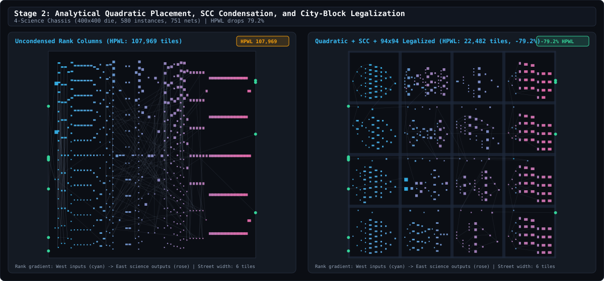
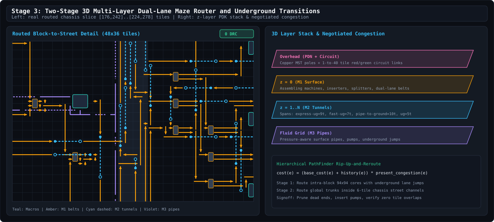
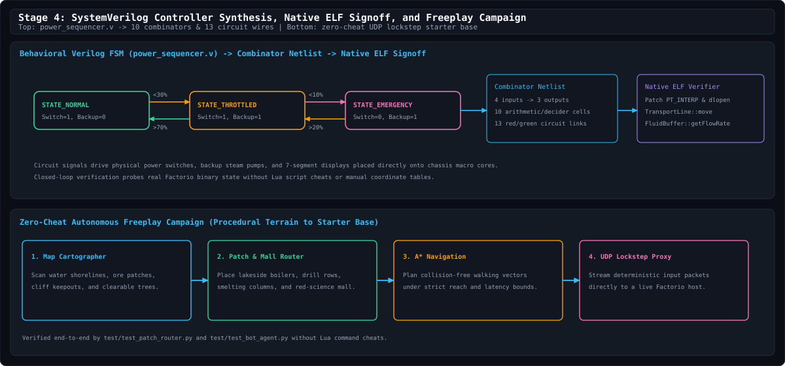
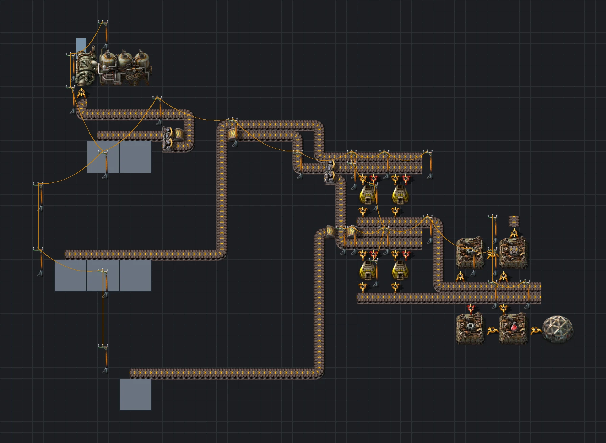

Foundry PDK & EDA Physical Compiler for Factorio
Factorilog synthesizes balanced production graphs from live Factorio prototype data via LP optimization, places macros across a 94×94 tile city-block chassis using analytical quadratic wirelength minimization and OpenROAD, routes multi-layer underground belts and fluids with a 3D PathFinder maze router, and verifies zero-cheat execution directly against Factorio C++ internals and live UDP multiplayer lockstep.
Interactive 7-Science Die & Layer Inspector (science_chassis)
LIVE GEOMETRY + SPRITE OVERLAY
Game-Sprite Renderings & SystemVerilog Telemetry
RENDERED FROM FACTORIO PROTOTYPE ASSETS
Full 7-Science Chassis Die (1200×1200 tiles)
Global die view showing 12×12 100-tile pitch city blocks, 6-tile perimeter street channels, perimeter substations/lamps, West raw bus pins, and East rocket silo complex.

Native 32 px/tile Street-Straddling Detail Crop
Zoomed extract directly from the decoded 188,786-entity blueprint showing assembling machines, inserters, splitter trees, surface M1 belts, and underground tunnel transitions crossing a street channel.

SystemVerilog Power Sequencer (power_sequencer.v)
1-science factory paired with synthesized arithmetic/decider combinators, backup pump control, hysteresis FSM states, and seven-segment I/O telemetry panels.
IC-to-Factorio PDK Mapping
| VLSI Concept | Factorio Equivalent |
|---|---|
| Standard Cell | Building + recipe footprint (tech.lef) |
| Cell Delay | energy_required / crafting_speed (tech.lib) |
| M1 / M2 / M3 Layers | Surface belts / underground tunnels / pipes |
| Clock / RTL FSM | pyslang Verilog → combinator graph |
| PDN Grid | Big pole & substation Minimum Spanning Tree |
| DRC / LVS Signoff | Native C++ ELF TransportLine simulation |
Click any sprite image or pipeline diagram to zoom full screen.
Compiler Architecture & Algorithmics
DETERMINISTIC VECTOR DIAGRAMS FROM REAL ARTIFACTS
1. Synthesis & Rate Solver (foundry/solve.py, netbuild.py): Solves a SciPy linear program over the game prototype dump with zero mass-balance error, then lowers fractional demand into integer machines, balanced 2-to-2 binary splitter/merger trees, Liberty timing stubs, and LEF macros.

2. Analytical Placement & Legalization (analytical_placer.py, flow/factorilog.tcl): Condenses strongly connected recipe cycles (Tarjan SCC) to enforce acyclic West-to-East topological ordering, minimizes continuous quadratic wirelength with boundary anchors, and legalizes macros into 94×94 city-block cores around 6-tile street channels.

3. Hierarchical 3D Maze Router (def2bp.py, foundry/router/): Routes intra-block nets inside each 94×94 core before promoting cross-block nets onto highway street channels. Negotiated PathFinder congestion cost (base + history × present) allocates underground belt and pipe jumps using exact prototype spans with zero DRC violations.

4. RTL Controllers, Native ELF Signoff & Autonomous Agent: Compiles power_sequencer.v into Factorio combinators, validates throughput against patched dlopen symbols in Factorio's own binary (TransportLine::move, FluidBuffer::getFlowRate), and drives a live unmodded multiplayer game over UDP.
Zero-Cheat Autonomous Freeplay Starter Base
LIVE UDP LOCKSTEP VERIFIED
Procedural Terrain to Red-Science Mall
Synthesized directly from scanned Freeplay terrain coordinates (foundry/campaign/cartographer.py, foundry/patch_router.py, foundry/mp_proxy.py) without Lua command cheats or fixed map seeds.
End-to-End Lockstep Pipeline
Instead of pasting cheat blueprints with elevated Lua permissions, the agent spawns as an ordinary engineer in headless multiplayer Freeplay, classifies water shorelines and resource clusters from map packets, navigates A* paths around cliffs and water, mines initial ore, crafts drills and boilers, and builds every entity manually over UDP.
- Cartographer: Detects water, resource patches, cliffs, rocks, and trees dynamically.
- Patch Router: Synthesizes shoreline steam power and patch-to-smelter belt topologies.
- Anti-Cheat Enforced: Tested statically by
//tools:no_bot_cheats_test.
Factory Scaling & Compile Benchmarks (60 SPM per Pack)
0 DRC ACROSS ALL TARGETS44b6c0f (2026-11-13)
on AMD Ryzen 5 7600X 6-Core Processor (6 physical cores / 12 logical threads).
| Target | Packs | Die Size | Macros | PDK Cells | BP Entities | DRC | Synth (s) | PnR (s) | Route+BP (s) | Compile (s) |
|---|---|---|---|---|---|---|---|---|---|---|
| automation_science | 1 | 202×120 | 38 | 9 | 1,642 | 0 | 0.51 | 1.43 | 2.27 | 4.21 |
| automation_controlled_science | 1 | 248×122 | 56 | 14 | 1,810 | 0 | 1.13 | 1.01 | 2.46 | 4.61 |
| automation_science_chassis | 1 | 300×300 | 46 | 9 | 2,503 | 0 | 0.94 | 1.05 | 2.08 | 4.08 |
| automation_logistic_chassis | 2 | 300×300 | 119 | 14 | 6,488 | 0 | 5.70 | 0.77 | 3.73 | 10.21 |
| automation_logistic_military_chassis | 3 | 300×300 | 244 | 21 | 11,386 | 0 | 6.16 | 0.75 | 6.30 | 13.20 |
| automation_logistic_military_chemical_chassis | 4 | 400×400 | 580 | 30 | 26,227 | 0 | 0.85 | 0.34 | 17.67 | 18.87 |
| automation_logistic_military_chemical_production_chassis | 5 | 700×700 | 1,521 | 35 | 68,224 | 0 | 7.16 | 1.11 | 26.96 | 35.22 |
| automation_logistic_military_chemical_production_utility_chassis | 6 | 900×900 | 2,439 | 43 | 116,339 | 0 | 16.05 | 0.95 | 104.41 | 121.41 |
| science_chassis | 7 | 1200×1200 | 3,824 | 51 | 188,786 | 0 | 111.23 | 1.64 | 86.61 | 199.48 |